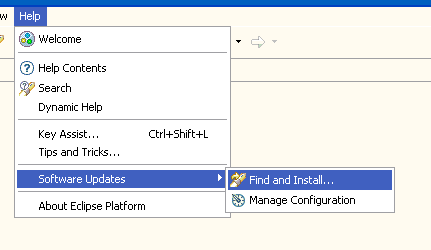
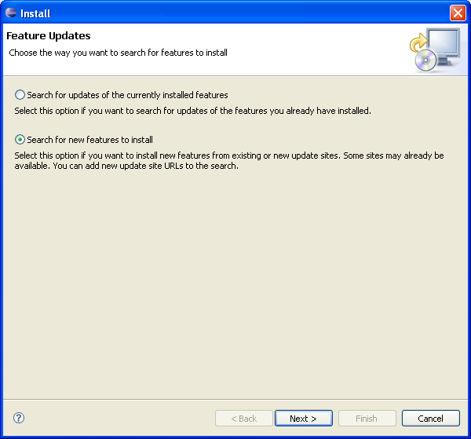
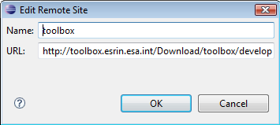
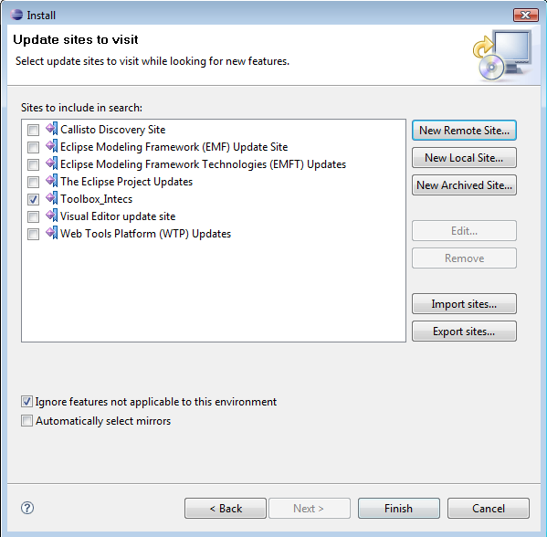
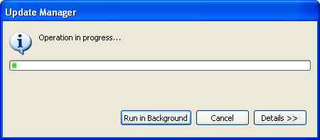
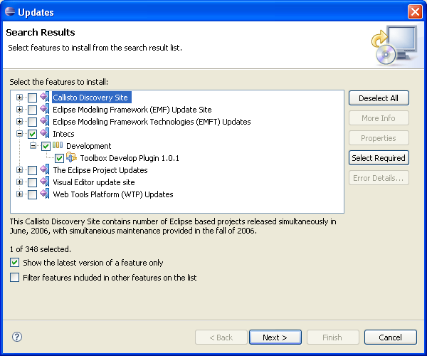
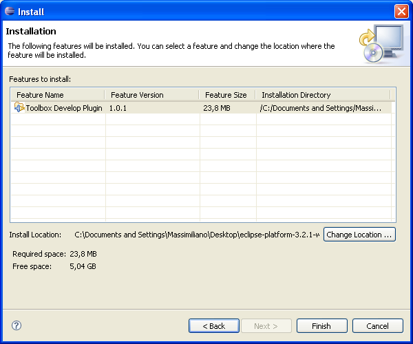
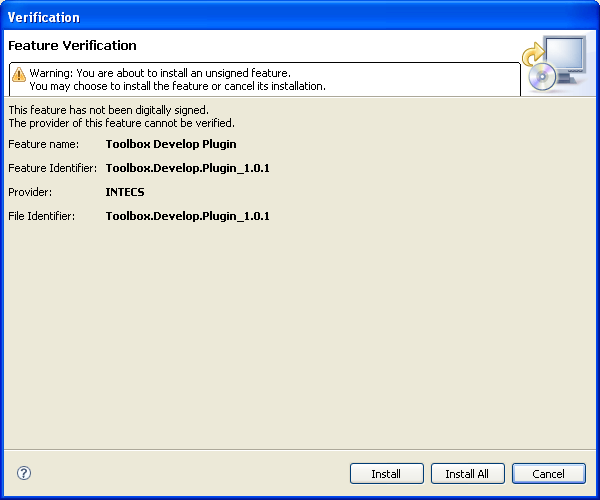

To install the latest version of the TOOLBOX DE, open Eclipse and select "Find and install" from the menu "Software Updates" under the Help main menu

Select "Search for new features to install"

Select "New Remote Site" and fill the for as following:
Click "Ok".

If you don't have WTP plugin installed or if you want to check for updates, select all available sites. Click "Finish".

The update procedure starts

All available updates are shown to user. Select the TOOLBOX Develop Plugin. If an error message is shown on top of the dialog, select the Callisto Discovery Site and click on the "Select required" button. All needed dependencies should be automatically selected. If not, expand the first level of the Callisto Discovery Site tree and click on the "Select required" button once again (this is an Eclipse bug).

Click "Next" and accept the terms of license.
Select "Finish"

If asked for installation verification, click "Install All".
If asked for reboot, click on "Yes".
